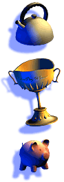
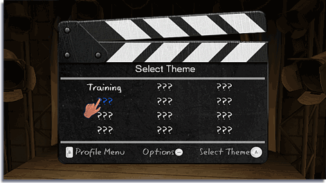

Tu meta en ShadowPlay es crear una sombra lo más parecida posible al objetivo utilizando los objetos que se te proporcionan. En el modo Free Play (Juego libre) puedes jugar con los objetos que has obtenido para crear tus propias sombras.

Para comenzar el juego, selecciona el canal ShadowPlay del Menú de Wii. Oprime en la pantalla principal para mostrar el menú Select Profile (Selección de perfil).
Si vas a comenzar una nueva partida, apunta a una ranura vacía indicada por un signo de interrogación y oprime .
Puedes utilizar el Wii Remote o para desplazarte por el teclado. Oprime para seleccionar una letra; oprime para eliminar el último de los caracteres que has ingresado. También puedes apuntar al icono de eliminar con el Wii Remote y oprimir para eliminar el último de los caracteres que has ingresado.
Cuando hayas terminado de ingresar tu nombre de perfil apunta a Done (Terminado) con el Wii Remote y oprime .
 Regresa al menú de perfil, apunta a tu nombre de perfil con el Wii Remote y oprime para seleccionarlo. Si deseas eliminar un perfil, apunta al que desees eliminar con el Wii Remote y oprime
Regresa al menú de perfil, apunta a tu nombre de perfil con el Wii Remote y oprime para seleccionarlo. Si deseas eliminar un perfil, apunta al que desees eliminar con el Wii Remote y oprime  . Se mostrará un menú de confirmación para corroborar tu elección.
. Se mostrará un menú de confirmación para corroborar tu elección.
Cuando selecciones tu perfil, se mostrará la pantalla Theme Select (Selección de tema).

‘???’ indica que todavía no has conseguido ese tema o acertijo. Al principio, las opciones Training (Entrenamiento) y Free Play (Juego libre) son las únicas disponibles.
Para poder avanzar en el juego, selecciona Training (Entrenamiento) y termina la serie de Training Excercises (Ejercicios de entrenamiento) dentro del tema.